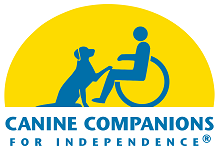

Canine Companions For Independence
Headquartered in Santa Rosa, CA, Canine Companions for Independence is the largest non-profit provider of assistance dogs, and is recognized worldwide for the excellence of its dogs, and the quality and longevity of the matches it makes between dogs and people. The result is a life full of increased independence and loving companionship.